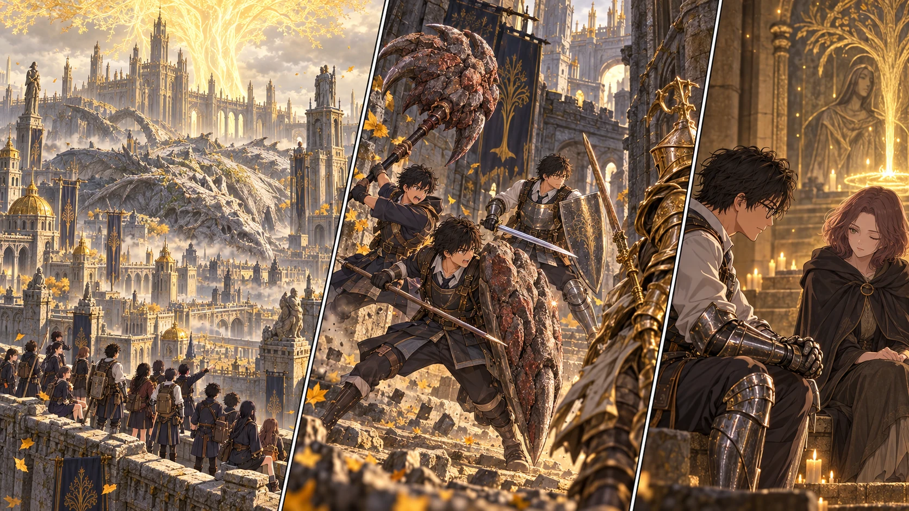

DAY67 / TURN1−77
竜の亡骸を渡る。

メリナ「……ここまで、連れてきてくれたのね」
【DAY67｜王都東城壁】門から続く橋を渡り、昇降機で上へ向かう。部屋を抜けた瞬間、花は弓を持つ手を下げた。屋根の上に、竜が横たわっていた。石のような翼が街区を覆い、その向こうには黄金樹がある。先生が見つけてきた「入口」の先には、こんなに大きな街が残っていた。
王都東城壁の祝福を十三人で確かめ、先生が火を灯した。ここは補給と帰還のために使う。入口側の王都城壁は、まだ予備として残す。教会の二十人には、この新しい祝福へ飛ぶ資格はまだない。彼ら自身がたどり着く道を作る仕事は、先の仕事だった。
休息の光のそばに、メリナが現れた。「……ここまで、連れてきてくれたのね」。先生は街の方を見る。近づけば終わりが見えると思っていた黄金樹が、ここからでも遥かに見えた。メリナは、ここで自分の目的を確かめたいと告げた。旅の同行を、いったん終えるのだと。
「これからは、自分の力でルーンを力に変えられる」。先生がまず確認したのは、生徒たちの成長が止まらないことだった。礼を言ってから、少しだけ言葉に詰まる。いつも次の危険の話ばかりで、彼女自身が何を求めていたかを、十分には聞けていなかった。「君も、気をつけて」。メリナは静かに頷いた。
【街路｜2d6＋4＝10】城壁には、白く丸い使者たちの奇妙な音が漂っていた。さらに下の建物では香料の匂いがする。先生は見える敵をすべて倒そうとはせず、屋内と曲がり角をつないで進む。四体と同時に戦う代わりに、見張りの兵、小姓、もう一人の兵を、互いの援護が届きにくい位置へ分けた。
最後の騎士が金色の槍を向けてきた。健太は大盾を置く位置を半歩直す。衝撃が腕へ通る。それでも身体ごと吹き飛ばされず、一度受けてから足を引けた。無限に受けられると思わず、息を吐いて盾を緩める。その脇から、直人が大竜爪を振り下ろした。
石畳が鳴った。敵の姿勢が崩れ、大地が黄金の刃を入れる。花と千夏は前衛が射線へ入った瞬間に弦を戻した。悠と拓海も、通路を味方ごと光で埋めはしない。攻める人、止める人、今は撃たない人。その分担で、四体を倒しても誰も傷つかなかった。
【大通りから、翼の上へ】大通りの広い場所には、戦いを始めたくない大きな影があった。一行は路地側へ寄り、露台の祝福を記録する。灯すのは保留。弓の射線が通る場所では一人ずつ遮蔽物を移り、通れる間を選んで竜の翼へ上がった。
さっきまで地面だと思っていた灰色の坂には、巨大な鱗が並んでいた。千夏が足元を見る。「これ、本当に死んでるんだよね」。誰も笑わなかった。生きていた姿を想像するだけで、今持っている弓も大盾も、ひどく小さく思える。
王都西城壁の祝福も未解放で記録した。城壁の強敵や地下へは寄らず、大樹根の方へ向かう。道の幅が変わるたび、先生は隊列を短く区切った。根の上にいる守人は、広い足場まで待って対処する。十三人の力があっても、十三人が横に並べる場所ではなかった。
【大樹根｜2d6＋4＝9】先生が先へ出たとき、脇から動いた守人の一撃を避けきれなかった。鎧をかすめ、身体が傾く。「止まれ！」。先頭だけが体勢を立て直し、後ろの者は押し寄せなかった。先生は安定した足場へ戻って赤い聖杯瓶を一本使った。
入口までは確認できた。奥の大聖堂には、金色の人影がある。先生の先読みが示すのは、最初の王、ゴッドフレイの幻影。実体ある騎士とは違い、毒で削る見込みはない。パリィで斧を弾く作戦にも頼れない。先生は、今ここで勢いに任せて踏み込むことをやめた。
追撃のない場所まで下がり、解放した東城壁へ帰還する。先生の怪我は休息で回復した。直人は爪の汚れを落とし、健太は盾の新しい傷をなぞった。二人の武器には、教会で構えただけの昨日とは違う手応えが残っていた。
先生は地図に、街路、露台、竜の翼、西城壁、大樹根をつないだ。入口から大聖堂まで、やっと一本の線になった。明日はその線をたどり、主力全員で金色の王に挑む。
今回の判定記録
| 判定 | 出目 | 補正 | 合計 |
|---|
| street | 3+3 | 4 | 10 |
| root | 4+1 | 4 | 9 |
| base | 1+4 | 3 | 8 |
抽選前の条件 · 抽選結果